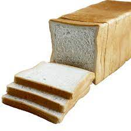
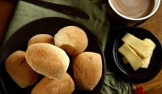
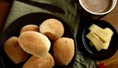

PRODUCT

LOAF
php 40.00
a quantity of bread that is shaped and baked in one piece and usually sliced before being eaten.
 PAN DE COCO
php 5.00
The bread contains some coconut milk, and is starchy and slightly sweet in taste.

PANDESAL
3 for php 10.00
It is made of flour, yeast, sugar, oil, and salt.
PAN DE COCO
php 5.00
The bread contains some coconut milk, and is starchy and slightly sweet in taste.

PANDESAL
3 for php 10.00
It is made of flour, yeast, sugar, oil, and salt.